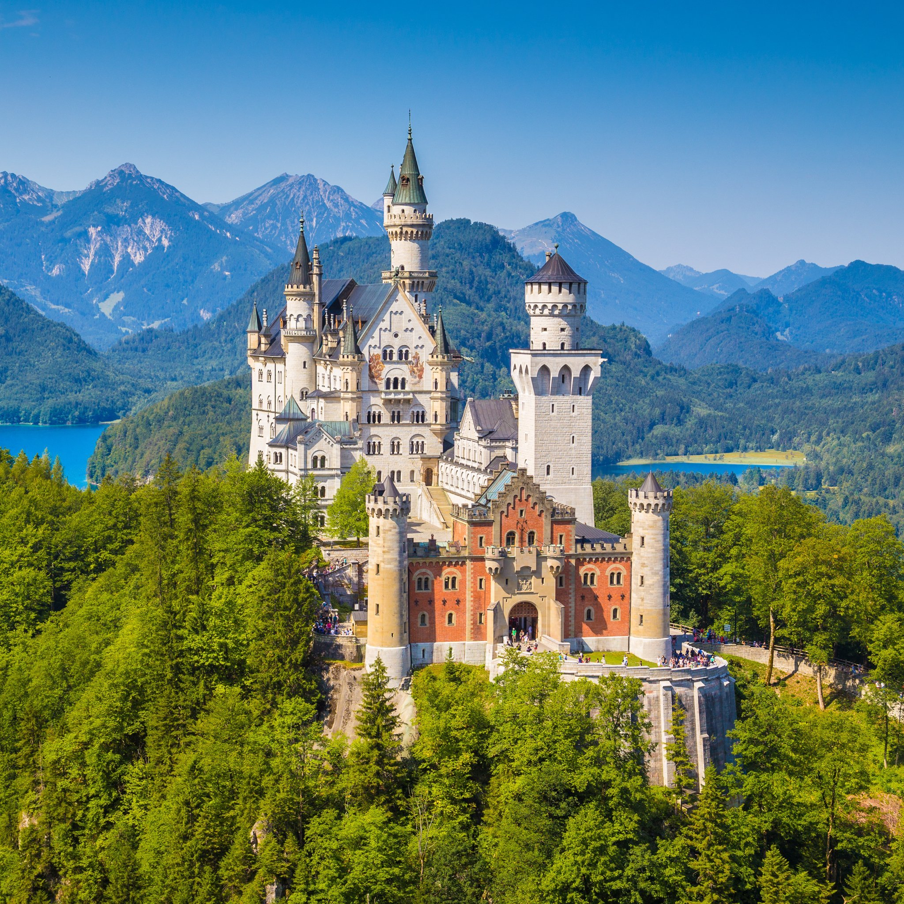

Three of Germany's Common Tourist Attractions:
Neuschwanstein
Neuschwanstein Castle is a 19th-century historicist palace on a rugged hill above the village of Hohenschwangau
near Füssen in southwest Bavaria, Germany. The palace was commissioned by King Ludwig II of Bavaria as a retreat and
in honour of Richard Wagner.

Berlin's Brandenburg Gate
The Brandenburg Gate is an 18th-century neoclassical monument in Berlin, built on the orders of Prussian king
Frederick William II after the temporary restoration of order during the Batavian Revolution.
 Cologne Cathedral (Kölner Dom)
Cologne Cathedral (Kölner Dom)
Cologne Cathedral is a Catholic cathedral in Cologne, North Rhine-Westphalia. It is the seat of the Archbishop of
Cologne and of the administration of the Archdiocese of Cologne. It is a renowned monument of German Catholicism and
Gothic architecture and was declared a World Heritage Site in 1996.